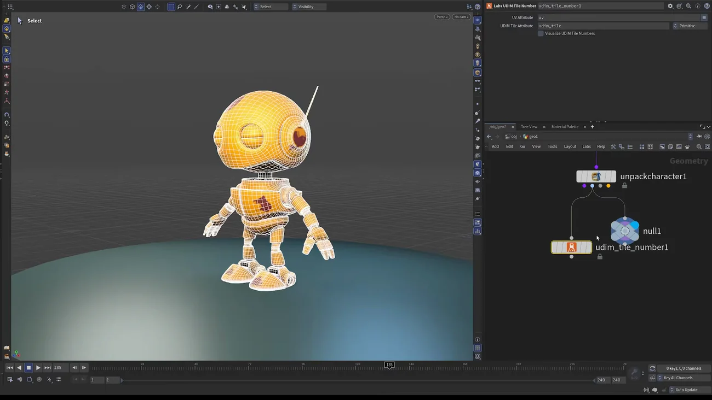
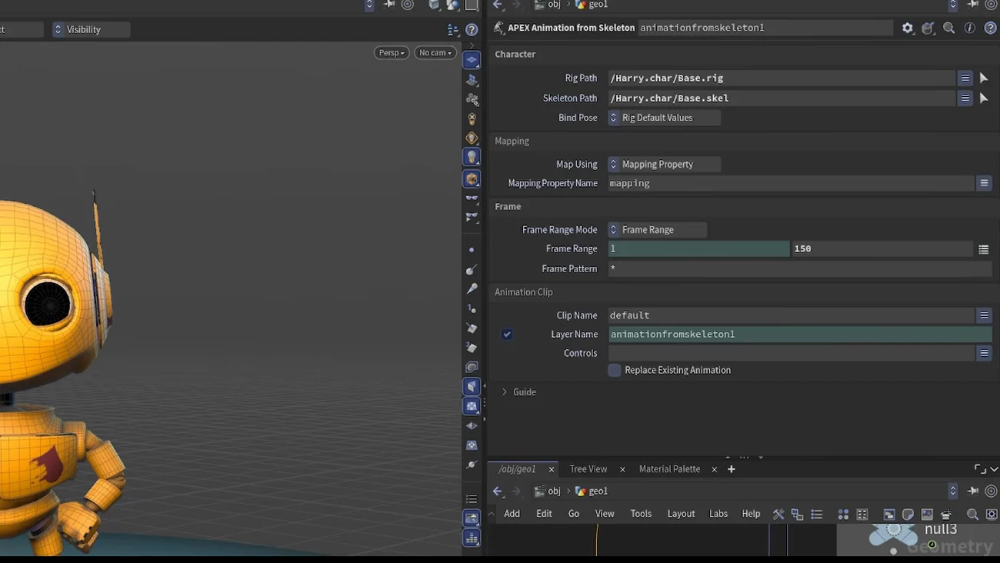

リグにプロシージャルな動きを乗せて戻す — Animation from Skeleton
出典: Houdini 22 | How to Procedurally Deform Rigs （SideFX 公式「Houdini 22 How-To」の1本 / Houdini 22 / 8:33 / 英語）。 このページは、上記の動画を見ながら自分用にまとめた日本語の学習メモです。SideFX 公式の翻訳ではありません。 ノード名とパラメータ名は Houdini 22.0.368 の実機で照合しています。
この回がやること
APEX からスケルトンを取り出し、SOP で好きなだけプロシージャルに変形して、APEX に戻します。
戻した動きはアニメーションレイヤーとして乗るので、 非破壊のまま上にさらに手付けできます。 「手付けアニメの上に揺れ・振動・ノイズを足したい」という要求に対する Houdini の答えです。
短い How-To の中でも、いちばん応用が効く回だと思います。
1. スケルトンを取り出す
APEX シーンの中身は全部パックされているので、ノードを選んでも何も選択できません。 中に手を入れる必要があります。
- APEX Unpack Character を配置します
- Character Name（
charname）に対象キャラを指定します（この例ではharry）

4つの出力
| # | 内容 | 使う？ |
|---|---|---|
| 1 | APEX シーンのパススルー（そのまま別の Scene Animate に繋いで続けられます） | |
| 2 | rest geo | |
| 3 | rest skeleton | |
| 4 | animated skeleton | これを使います |
実機で確認すると visoutput（Visualize Output）のメニューが
character / skin / capturepose / animatedpose となっていて、
4つの出力がそれぞれこれに対応しているのが分かります。
Shape Path / Skeleton Path / Rig Path の既定値はそれぞれ
/Base.shp / /Base.skel / /Base.rig です。
2. SOP で好きに変形する
ここが気持ちのいいところです。スケルトンは単なるジオメトリ（点の集まり）なので、 SOP で何をしてもよいのです。
この回では attribvop（Attribute VOP）を使います。
- VOP の中に Anti-Aliased Flow Noise を置きます
- 点の
Pをノイズの position に繋ぎます - 結果を
Pに加算して出力します - Flow Noise を 3D Motion に設定し、Time を flow value に繋ぎます → 時間で流れる動きになります
bonedeform（Bone Deform）に繋いで結果を確認します
これで手付けアニメの上にプロシージャルな動きが重なっているのが見えます。
効かせるタイミングを制御する
ノイズの Amplitude をプロモートして上位でキーフレームを打ちます。
0 → 着地で 0.6 → すぐ 0 に戻す、とすれば
踵が着いた瞬間だけ揺れます。
常時揺れているのではなく「ここだけ」にできるのが実用上大きいと思います。
3. APEX に戻す
APEX Animation from Skeleton を使います。 SOP / KineFX の世界と APEX の世界を繋ぐノードで、この回の主役です。

| パラメータ | 値 | 意味 |
|---|---|---|
| Rig Path / Skeleton Path | 例: /Harry.char/Base.rig / /Harry.char/Base.skel |
キャラのベースリグ／ベーススケルトンを指定します |
| Frame Range | 例では 1〜150 |
必要な範囲に絞ります。下の注意を参照 |
| Clip Name | default のまま | Scene Animate の default クリップに書かれます |
| Layer Name newlayer |
例: proc_motion |
ここが重要です。名前を付けると新しいアニメーションレイヤーとして乗ります。
既定値は $OS なので、ノード名がそのままレイヤー名になります |
| Controls | 空のまま | 空だと全コントロールに適用されます。絞りたいときだけ指定します |
Frame Range を絞る意味は大きいです。 このノードはアニメーションデータを channel primitive に変換するので時間がかかります。 必要な範囲だけにしておくと待ち時間が変わります。
配線
変形したスケルトン（Unpack Character の4番目の出力を SOP で加工したもの）を 第2入力に繋ぎます。第1入力には APEX シーンが入ります。
最初はエラーが出ますが、パラメータを埋めれば消えます。 そのまま Scene Animate に繋いでビューアステートに入れば、 プロシージャルな動きが乗ったリグが動きます。
4. 非破壊であることの意味
ここがこの回の要点です。乗った動きは別のレイヤーなので、
- オフにできます
- ウェイトを触って効き具合を調整できます（「ちょっとだけ欲しい」ができます）
- 全コントロールを選んでその上に新しいレイヤーを足し（
fixなど）、 その上からさらに手付けできます
つまり「手付け → プロシージャル → また手付け」が積み上げられます。 一度プロシージャルを乗せたら手が出せない、ということになりません。
講師も「この一区切りの中でやれることはほぼ無制限で、 そのまま HDA にしてツール化することもできる」と言っています。 実際、この流れはスケルトンを出す → SOP で加工する → Animation from Skeleton で戻す という3手なので、ツールにしやすい形だと思います。
この回のまとめ
- APEX の中身はパックされているので APEX Unpack Character で開けます
- 出力は4つ。使うのは4番目の animated skeleton です
- スケルトンは点の集まりなので、SOP で何をしてもよいのがこの回の解放感です
- Flow Noise を 3D Motion にして Time を flow value に繋ぐと時間で流れます
- Amplitude をプロモートしてキーを打てば、着地の瞬間だけ揺らすといった制御ができます
- 戻すのは APEX Animation from Skeleton。変形したスケルトンは第2入力です
- Frame Range は絞ります。channel primitive への変換に時間がかかります
- Layer Name を付けると新しいレイヤーになります（既定は
$OS）。だから非破壊で、 オフにもウェイト調整も、上からの手付けもできます - Controls は空のままで全体に適用されます